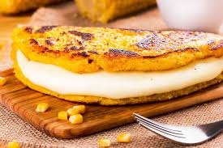

2 tazas de harina de maíz precocida (ej. Harina PAN)
2 1/2 tazas de agua tibia (aprox.)
1 cucharadita de sal
1 cucharada de aceite (opcional)
Rellenos al gusto: queso, carne mechada, pollo, jamón, aguacate, etc.
Procedimiento
En un bol, mezclar la harina de maíz con la sal.
Añadir el agua tibia poco a poco y amasar hasta obtener una masa suave y manejable. Dejar reposar 5 minutos.
Formar bolas del tamaño deseado y aplastarlas hasta obtener discos de 1–2 cm de espesor.
Calentar una plancha o sartén a fuego medio-alto y cocinar las arepas 4–6 minutos por cada lado hasta que formen una costra dorada.
Si se desea, terminar en el horno a 200 °C por 8–10 minutos para que queden bien cocidas por dentro.
Abrir por la mitad y rellenar con los ingredientes preferidos.
Pabellón Criollo
Ingredientes
500 g de carne de res para desmechar (falda, sobrebarriga o similar)
2 cebollas grandes
2 pimientos (uno rojo, uno verde) opcional
3 dientes de ajo
2 tomates maduros o 200 ml de salsa de tomate
1 cucharadita de comino
Sal y pimienta al gusto
Aceite vegetal
250 g de caraotas negras cocidas (o en lata, escurridas)
Azúcar (una pizca) para las caraotas si se desea
Arroz blanco cocido para acompañar
Procedimiento
Cocinar la carne en agua con sal hasta que esté blanda (puede ser en olla a presión 45–60 minutos). Reservar el caldo.
Desmechar la carne con dos tenedores.
En una sartén con aceite, sofreír cebolla, pimiento y ajo picados hasta transparentar.
Añadir el tomate picado o la salsa, el comino, sal y pimienta. Agregar la carne desmechada y cocinar a fuego medio 10–15 minutos para integrar sabores.
Separadamente, calentar las caraotas con un poco de aceite, cebolla picada y una pizca de azúcar; sazonar al gusto.
Servir el pabellón: arroz blanco, caraotas negras, carne mechada y, si se desea, tajadas de plátano frito (plátano maduro frito).
Hallacas
Ingredientes
2 cebollas grandes
2 pimientos
3 dientes de ajo
200 g de aceitunas verdes
100 g de pasas (opcional)
Alcaparras (opcional)
2 cucharadas de pasta de tomate
Hojas de plátano (limpias) y/o papel aluminio para envolver
Hilo para atar
Sal, pimienta, comino y sazón al gusto
Procedimiento
Cocinar las carnes en agua con sal hasta que estén tiernas. Reservar y desmenuzar o cortar en trozos pequeños.
Preparar el guiso: en aceite sofreír cebolla, pimiento y ajo picados; agregar las carnes, la pasta de tomate, aceitunas, pasas y alcaparras; sazonar y cocinar 10–15 minutos. Dejar enfriar.
Preparar la masa: mezclar la harina con el caldo caliente y amasar hasta obtener una masa suave y homogénea; ajustar sal y añadir un poco de grasa si se desea para más sabor.
Calentar las hojas de plátano para que queden flexibles (pasarlas por la llama o agua caliente) y cortar en rectángulos.
Extender una porción de masa sobre la hoja, colocar una porción del guiso en el centro y doblar la hoja formando un paquete; envolver con papel aluminio y atar con hilo.
Hervir las hallacas en agua con sal por 1–1.5 horas o hasta que la masa esté cocida. Escurrir y dejar reposar unos minutos antes de desenvolver.
Cachapas

Ingredientes
4 tazas de maíz tierno desgranado (puede ser fresco o congelado descongelado)
1/2 taza de harina de maíz o de trigo (opcional, para dar consistencia)
1-2 cucharadas de azúcar (al gusto)
1 pizca de sal
1/4 taza de leche (opcional)
Mantequilla o aceite para cocinar
Queso de mano, queso blanco fresco o queso rallado para acompañar
Procedimiento
Licuar el maíz con la leche (si se usa) hasta obtener una mezcla homogénea con algo de textura; añadir la harina, azúcar y sal. Ajustar la consistencia para que sea una masa espesa pero vertible.
Calentar una sartén o budare a fuego medio y engrasarla ligeramente con mantequilla o aceite.
Verter porciones de la masa formando discos del tamaño deseado y cocinar 3–5 minutos por cada lado hasta que estén doradas y cocidas por dentro.
Servir calientes, tradicionalmente rellenas o acompañadas con queso de mano o queso blanco.
Tequeños
Ingredientes
500 g de queso blanco firme (tipo llanero o queso para freír)
2 tazas de harina de trigo
1 huevo
2 cucharadas de mantequilla (a temperatura ambiente)
Agua (cantidad necesaria)
1 cucharadita de sal
Aceite para freír
Procedimiento
Cortar el queso en bastones de tamaño uniforme (aprox. 1–1.5 cm x 7–9 cm).
Preparar la masa: mezclar la harina con la sal, el huevo y la mantequilla; agregar agua poco a poco hasta formar una masa lisa y elástica. Dejar reposar 15–30 minutos.
Estirar la masa en una superficie enharinada formando una lámina fina. Cortar tiras largas (aprox. 2–3 cm de ancho).
Enrollar cada bastón de queso con una tira de masa, sellando bien los bordes para que no se salga el queso al freír.
Freír en aceite caliente hasta que estén dorados y crujientes (2–4 minutos). Escurrir sobre papel absorbente y servir calientes.